🦞 OpenClaw + SiliconFlow 六模型专家矩阵部署方案
本项目提供一个完整的实战教程，演示如何在 Windows 11 环境下使用 Docker 部署 OpenClaw 具身智能代理底座。针对原生架构在多模态与本地资源管理上的局限，本方案通过自建 MAS (Multi-Agent Surrogate) 智能路由代理，成功对接 SiliconFlow 平台，实现了多模态专家模型（DeepSeek 与 Qwen 系列）的动态分发，并内置了严密的物理隔离与资源熔断防线。
本教程记录了从底层重构到部署落地的所有详细步骤与海量踩坑经验，极具实战参考价值。
示意图

📑 Table of Contents / 目录
🖥️ 环境信息
以下是本系统实测通过的软硬件环境配置：
| 项目 | 详情 |
|---|---|
| 操作系统 | Windows 11 Home China 25H2 64位 |
| 处理器 | AMD Ryzen 9 7945HX 十六核 |
| 内存 | 16GB DDR5 5200MHz |
| 显卡 | NVIDIA GeForce RTX 5070 Ti Laptop GPU (12GB) |
| Docker | Docker Desktop（官网下载 www.docker.com） |
| AI 模型 | DeepSeek (V3.2/R1) / Qwen3 (VL/Coder) / BAAI (bge-m3/reranker) |
📋 前置准备 (必看)
1. 开启 Windows 虚拟化与 WSL2 (核心避坑)
在 Windows 11 上运行 Docker 强依赖 WSL2：
-
确保在电脑 BIOS 中已开启CPU虚拟化（任务管理器 -> 性能 -> CPU 中可查看“虚拟化：已启用”）。
-
打开 PowerShell（以管理员身份运行），执行以下命令安装 WSL，安装完成后请重启电脑：
wsl --install
2. 安装 Git
前往 Git 下载安装，安装后在 PowerShell 验证：
git --version
3. 安装 Docker Desktop
前往 Docker Desktop 下载安装。
注意
安装时建议勾选“Use WSL 2 based engine”。安装完成后，确保 Docker Desktop 处于已启动状态。
4. 获取 SiliconFlow API Key
前往 SiliconFlow 控制台 免费注册。
⚠️ 核心优化：为了实现多路并发隔离、解决 Token 争抢与限流瓶颈，建议创建多个独立的 Key，分别用于：
-
通用文本与工具调度 (Text & Tool)
-
视觉与代码专家 (Vision & Code)
-
深度推理专家 (Reason)
-
向量嵌入记忆 (Embed)
🚀 部署步骤 (核心 10 步)
第一步：配置 Git 代理（如有需要）
国内网络访问 GitHub 较慢，建议配置代理（端口根据自己的代理软件填写）：
git config --global http.proxy http://127.0.0.1:10808
git config --global https.proxy http://127.0.0.1:10808
第二步：克隆 OpenClaw 仓库
建议使用 --depth 1 只克隆最新版本，速度更快：
cd D:\AI # 切换到你想存放项目的目录
git clone --depth 1 https://github.com/openclaw/openclaw
cd openclaw
第三步：部署架构重构模板与魔改工具库
# 克隆本仓库部署模板
git clone https://github.com/Syysean/openclaw-expert-matrix D:\AI\openclaw-deploy
# 覆盖核心网关、编排文件与环境变量
Copy-Item D:\AI\openclaw-deploy\proxy.js D:\AI\openclaw\proxy.js -Force
Copy-Item D:\AI\openclaw-deploy\docker-compose.yml D:\AI\openclaw\docker-compose.yml -Force
Copy-Item D:\AI\openclaw-deploy\.env.example D:\AI\openclaw\.env.example -Force
# 部署沙盒安全配置与加固版工具库
Copy-Item D:\AI\openclaw-deploy\config D:\AI\openclaw\ -Recurse -Force
mkdir -p D:\AI\openclaw\workspace\tools
Copy-Item D:\AI\openclaw-deploy\custom_tools\* D:\AI\openclaw\workspace\tools\ -Recurse -Force
第四步：配置环境变量 (⚠️ 极易踩坑)
复制模板文件并编辑：
Copy-Item .env.example .env
notepad .env
.env 文件中填写以下多路计费凭证：
# Gateway 认证 token (必须生成随机字符串)
OPENCLAW_GATEWAY_TOKEN=你的随机token
# SiliconFlow 多路独立鉴权 Key
SILICONFLOW_TEXT_API_KEY=sk-...
SILICONFLOW_TOOL_API_KEY=sk-...
SILICONFLOW_VISION_API_KEY=sk-...
SILICONFLOW_REASONING_API_KEY=sk-...
SILICONFLOW_CODE_API_KEY=sk-...
SILICONFLOW_EMBED_API_KEY=sk-...
🔴 血泪教训：变量名和等号前后绝对不能有空格，否则 Key 解析必报错！
第五步：构建 Docker 本地镜像
docker build -t openclaw:local .
⏳ 若遇到
unexpected EOF错误，通常是网络中断导致，重新运行即可。
第六步：启动容器与物理熔断机制
本系统的 docker-compose.yml 已内置针对 Proxy 的 512MB 内存物理锁：
docker compose up -d
docker compose ps
docker compose logs siliconflow-proxy
[proxy] 中央大脑 (text/tool) -> Pro/deepseek-ai/DeepSeek-V3.2
[proxy] 视觉专家 (vision) -> Qwen/Qwen3-VL-32B-Instruct
...
第七步：运行配置向导
docker compose run --rm openclaw-cli configure
-
Gateway 位置：选
Local (this machine) -
配置项目：选
Gateway -
Gateway port：填
18789 -
Gateway bind mode：选
LAN (All interfaces) -
Gateway auth：选
Token -
Tailscale exposure：选
Off -
Gateway token：填入
.env里的OPENCLAW_GATEWAY_TOKEN
第八步：健康检查
docker compose run --rm openclaw-cli health
Gateway: reachable 说明路由底座配置成功。
第九步：测试多模态透传交互 (CLI)
docker compose run --rm openclaw-cli agent --session-id test01 -m "你好，请调用代码专家写一段底层单片机控制代码"
第十步：访问网页界面 (WebUI) 并批准设备
- 浏览器打开
http://localhost:18789 - 在「网关令牌」填入你的 token，点击连接。
- 首次连接需要批准设备，回到 PowerShell 运行：
批准后刷新网页即可接管全局节点。
# 查看待批准的设备及 Request ID docker compose run --rm openclaw-cli devices list # 批准设备 (将 <requestId> 替换为实际的 ID) docker compose run --rm openclaw-cli devices approve <requestId>
🎉 部署成功示例
终端对话

网页界面

🛑 服务管理与停止
- 停止并保留数据：
docker compose stop - 停止并移除容器与网络：
docker compose down - 查看实时日志：
docker compose logs -f - 只看智能路由链路日志：
docker compose logs -f siliconflow-proxy
❗ 常见报错与解决方法
[容器与镜像级异常]
1. pull access denied for openclaw
- 排障：官方核心引擎尚未提供公共构建，必须在本地执行 docker build -t openclaw:local . 完成本地编译。
2. 容器频繁退出 OOMKilled 或 Exit Code 137
- 排障：系统成功防御了内存溢出。通常是因为发送了未经压缩的超大载荷（如>10MB图像）击穿了 512MB 的物理限制。使用附带的 ask_vision.cjs 可进行前端拦截。
[网络与网关路由异常]
3. [proxy] request error: client disconnected
- 排障：若偶发，此为 Node.js 正常的长连接生命周期结束；若大面积报错且伴随 502，说明你的 API Key 触发了上游服务商的速率限制 (Rate Limit)，建议增加 Key 池数量。
4. LLM request timed out
- 排障：通过 docker compose logs siliconflow-proxy 查看日志。通常是云端节点拥堵，或本地网关容器未正常启动。
5. ERR_EMPTY_RESPONSE / non-loopback Control UI requires...
- 排障：网关绑定为局域网 (LAN) 时，必须在 openclaw.json 中配置 dangerouslyAllowHostHeaderOriginFallback: true 以允许跨域源站校验。
[认证与权限异常]
6. SILICONFLOW_DEEPSEEK_API_KEY is not set / 启动报错
- 排障：检查 .env 文件。确保多个 SILICONFLOW_* 变量名拼写正确，且等号前后绝对不能有空格。
7. Verification failed: status 402
- 排障：上游模型路由寻址成功，但拒绝服务。说明对应 SiliconFlow 账户配额耗尽。
8. gateway token mismatch / unauthorized: gateway token missing
- 排障：网页端或 .env 中输入的 Token 与沙盒配置库 (openclaw.json) 中记录的不一致。重跑 configure 向导覆写。
9. pairing required
- 排障：新的终端（如浏览器）首次连接需执行设备签权：使用 devices list 查看，并用 devices approve <id> 批准。
[文件与配置异常]
10. Missing config（Gateway 一直重启）
- 排障：本仓库模板已在 docker-compose.yml 中附加 --allow-unconfigured 参数彻底解决此问题，请检查编排文件版本。
11. ERR_CONNECTION_REFUSED (Gateway 容器崩溃)
- 排障：手写 openclaw.json 时破坏了 JSON 语法规范。使用 JSON 校验工具修复后重启。
12. 404 status code (no body)
- 排障：Agent 路由寻址失败。确认 openclaw.json 中的 model 字段值指向了正确的供应商接口 (siliconflow/deepseek)。
13. SILICONFLOW_API_KEY is not set (单 Key 报错)
- 排障：仍在运行旧版的“单 Key 路由”脚本。请用最新的 proxy.js（多路独立路由版）覆盖，并重启容器。
14. 僵尸工具进程永久挂起
- 排障：调用 web_fetch 时系统卡死。请检查是否未挂载 custom_tools/ 目录下的安全脚本（已内置 30 秒强制超时熔断锁）。
🔒 安全注意事项
- 绝对不要将
.env文件上传到 GitHub。 - 本方案通过
config/openclaw.json强制开启了sandbox: non-main降级策略，限制非主私聊环境下的系统级指令执行权限。 - Gateway Token 泄露后，请重新生成并更新
.env文件，随后执行docker compose restart openclaw-gateway重启服务。 - 任何底层配置变更后，必须重启受影响的容器。
底层智能分发逻辑：
Incoming Request -> [Payload Inspector]
│
├─ 匹配专家标识 (reason/code/vision) ──→ 专家模型直连通道 (专属 API Key)
│
├─ 检测到工具调度 (tools 数组存在) ───→ DeepSeek-V3.2 (TOOL_KEY 独立计费池)
│
└─ 常规纯文本请求 (Default) ─────────→ DeepSeek-V3.2 (TEXT_KEY 通用池)
📚 参考资料
👤 关于作者
湖南工商大学 机器人工程专业 本科在读
欢迎大家进行讨论和复现。如有问题或优化建议，欢迎提交 Issue 或 PR！